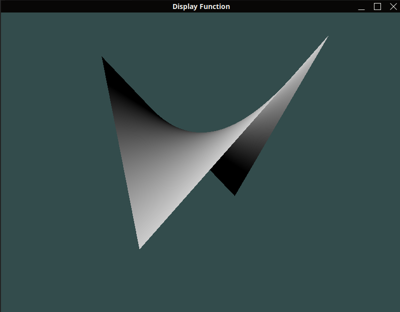
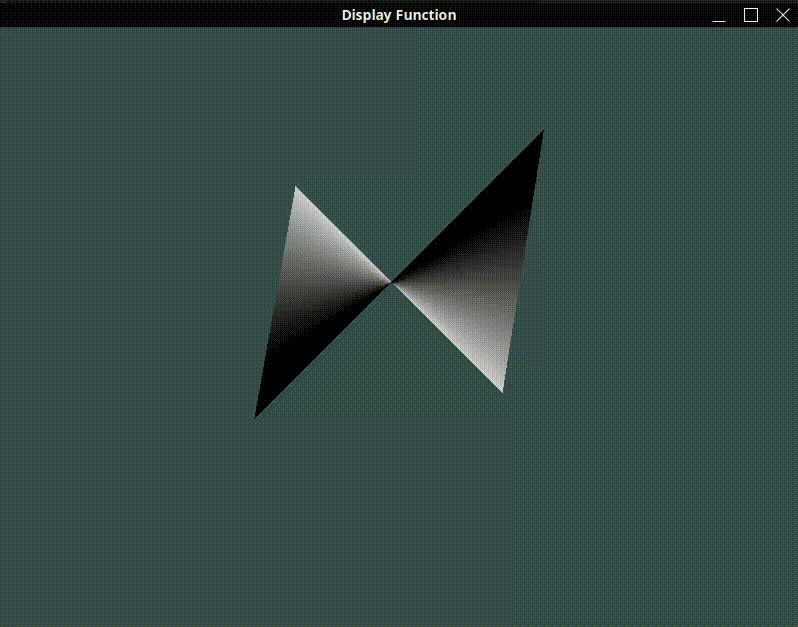

Surface-functions Display
Displaying mathematical surface functions in 3D (in order to generalize it to 3D Surfaces mapping).
Github LinkFirst display
Here's the display of the function $f : (x, y) \in \mathbb{R}^2 \mapsto xy \in \mathbb{R}$ with OpenGL.

The chosen normals (inducing the light reflexion) are arbitrary, there's still no derivative computed.
3D view manipulation with a mouse
I added a camera controlled by the mouse; allowing us to navigate the 3D space.
